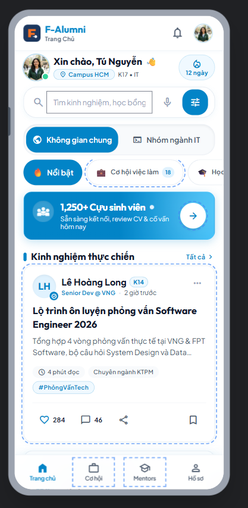
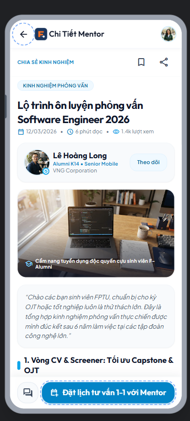
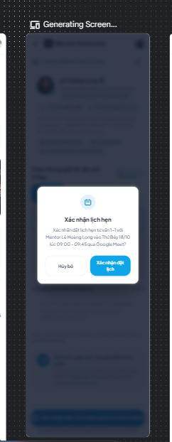
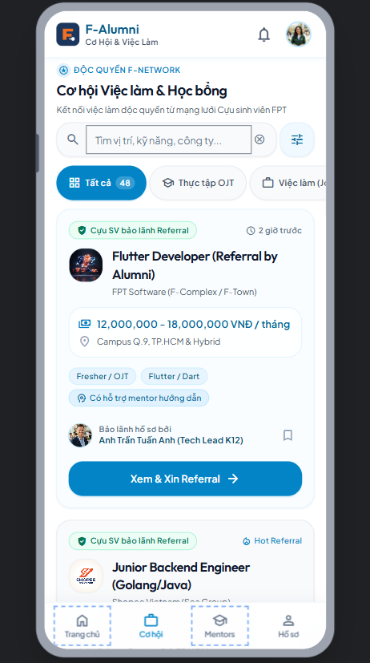
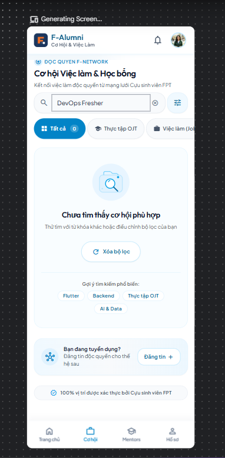
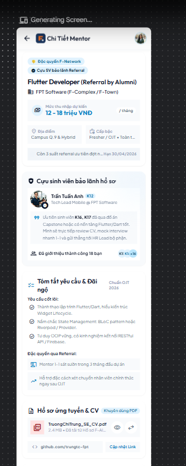

F-Alumni: FPT Alumni Mentorship & Opportunity Network
Nền tảng kết nối mạng lưới cựu sinh viên Đại học FPT với sinh viên đang theo học
- Phân chia 2 Không Gian Rõ Ràng: Không gian chung toàn trường (sự kiện, học bổng) và Không gian chuyên môn theo nhóm ngành (Kỹ thuật phần mềm SE, AI, BA, Thiết kế...).
- Cơ Hội Việc Làm & Referral OJT: Cựu sinh viên trực tiếp đăng tin tuyển dụng và cung cấp quy trình bảo lãnh hồ sơ sinh viên FPT.
- Tư Vấn 1-1 Qua Google Meet: Đặt lịch hẹn cố vấn định hướng nghề nghiệp, review CV với cựu sinh viên thành đạt.
- TV1: Võ Quang Tâm (SE192621) — UX Research, Persona & User Flows (Branch:
tv1) - TV2: Trương Chí Trung (SE193059) — Trưởng nhóm, AI Lead & Google Stitch (Branch:
tv2) - TV3: Nguyễn Phương Khải (SE183590) — UI Design System, 8 Screen Specs & Tokens (Branch:
tv3) - TV4: Đỗ Trọng Tín (SE190218) — Prototype, Flutter Handoff & Lab 3 Backend (Branch:
tv4)
Minh Chứng Nộp Bài Hoàn Toàn Minh Bạch
Tuân thủ quy định Liêm chính Học thuật (Academic Integrity), mã nguồn và thiết kế đều ở chế độ Public:
Problem Statement & Target Persona
Chân dung người dùng mục tiêu và tiêu chí thành công đo lường được
- Họ tên: Trương Chí Trung | 20 tuổi | Sinh viên năm 3 K19
- Chuyên ngành: Kỹ thuật Phần mềm (Software Engineering - SE), ĐH FPT TP.HCM
- Bối cảnh: Đang trong giai đoạn chuẩn bị gấp rút cho kỳ thực tập doanh nghiệp (OJT). Cần kinh nghiệm phỏng vấn và bảo lãnh tuyển dụng từ cựu sinh viên.
- Thiết bị sử dụng: Samsung Galaxy A54 (Android 14, độ phân giải chuẩn 360 × 800 dp logic, màn hình 120Hz).
- Thói quen: Sử dụng điện thoại 1 tay bằng ngón cái (Thumb Zone), kiểm tra app giữa các giờ đổi phòng học.
- Thông tin tuyển dụng trôi nổi, không rõ tính xác thực trên mạng xã hội.
- Ngại ngùng khi nhắn tin riêng xin Referral cựu sinh viên vì không có form chuẩn.
- Mất thời gian nhắn tin qua lại 2-3 ngày chỉ để thống nhất một khung giờ họp online.
"Sinh viên năm 3 ngành SE tại ĐH FPT cần một kênh chính thống để học hỏi kinh nghiệm, nộp CV xin bảo lãnh Referral OJT trong dưới 20 giây và đặt lịch tư vấn 1-1 với cựu sinh viên trong dưới 30 giây."
Information Architecture (8 Screens Inventory)
Cấu trúc điều hướng phân cấp rõ ràng giữa Top-Level Tabs và Nested Screens
- SCR_01: Login & Role Selection — Đăng nhập Google FPT Edu (@fpt.edu.vn) & chọn ngành.
- SCR_02: Home Feed Screen — Tab Không gian chung toàn trường & Tab Nhóm ngành chuyên sâu.
- SCR_03: Post / Experience Detail — Chi tiết kinh nghiệm phỏng vấn, tài liệu đính kèm & Bio Alumni.
- SCR_04: Career & Opportunity Board — Bảng tin việc làm OJT / Học bổng có cựu SV bảo lãnh.
- SCR_05: Job Detail & Referral Apply — Chi tiết JD, yêu cầu, tải lên CV PDF & thư ngỏ.
- SCR_06: Alumni Mentors Directory — Danh bạ cựu SV theo ngành & công ty (Google, VNG, FPT...).
- SCR_07: Mentor Booking Screen — Chọn giờ rảnh, chốt lịch Google Meet & nhận Session Pass.
- SCR_08: Profile & My Network — Hồ sơ cá nhân, kho CV PDF, quản lý lịch hẹn & bookmark.
└── Main Shell (Bottom Navigation Bar — 4 Tabs)
├── [Tab 1] SCR_02: Home Feed (Chung / Ngành)
│ └── SCR_03: Post Detail ➔ SCR_07: Booking
├── [Tab 2] SCR_04: Career Board (OJT / Jobs)
│ └── SCR_05: Job Detail & Referral Form
├── [Tab 3] SCR_06: Mentors Directory
│ └── SCR_07: Mentor Booking & Session Pass
└── [Tab 4] SCR_08: Profile & My Network
Three User Flows & Error Recovery Path
3 luồng người dùng hoàn chỉnh có xử lý nhánh lỗi và phục hồi dữ liệu
HAPPY PATH • 4 BƯỚC
- SCR_01: Đăng nhập Google FPT.
- SCR_02: Duyệt bài viết kinh nghiệm.
- SCR_03: Đọc chi tiết bài chia sẻ.
- SCR_07: Chọn slot & nhận Session Pass Google Meet.
HAPPY PATH • 3 BƯỚC
- SCR_04: Lọc tin OJT theo chuyên ngành SE.
- SCR_05: Xem JD & đính kèm file CV PDF.
- Gửi đơn xin bảo lãnh Referral.
- SCR_08: Theo dõi trạng thái hồ sơ.
ERROR & RECOVERY (BẮT BUỘC)
- Xung đột lịch hẹn (Slot Conflict 409): Slot vừa bị người khác đặt ➔ Hiện Banner cảnh báo + tự động đề xuất 3 slot trống gần nhất.
- Mất mạng khi nộp CV (No Internet): Giữ nguyên file CV & thư ngỏ trong form, hiện nút "Thử lại (Retry)" một chạm.
AI UI Generation with Google Stitch
Soạn thảo Prompt nguyên văn dựa trên DESIGN.md và kết quả sinh UI ban đầu
Platform & Constraints:
- Mobile screen resolution: 360 x 800 dp
- Brand Colors: FPT Orange (#F27024), Deep Navy Blue (#1B365D), Background #F8F9FA
- Typography: Body text 14sp minimum, titles 18-24sp bold
- Touch target: Minimum 48 x 48 dp
- High contrast: Text contrast > 4.5:1 (WCAG 2.1 AA)
Generate 4 core screens: Home Feed (SCR_02), Post Detail (SCR_03), Opportunity Board (SCR_04), Mentor Booking (SCR_07)..."



AI Iterations & UX Critique (10 Heuristics)
3 vòng lặp Before / After có ý nghĩa và bản phản biện chuyên sâu
Heuristic #5: Error Prevention
Khắc phục việc bấm nhầm giờ hẹn ➔ Bổ sung Modal Dialog tóm tắt lịch & cam kết tham gia.


Heuristic #9: Error Recovery
Khắc phục màn hình trắng trơn khi tìm kiếm ➔ Thêm icon kính lúp & nút Reset bộ lọc.


Luồng OJT Hoàn Chỉnh
Bổ sung khu vực tải lên file CV PDF, ô thư ngỏ & nút nộp đơn xin cựu SV bảo lãnh.


Design Decisions & Student Rationale
Thể hiện năng lực phản biện: Chấp nhận, Chỉnh sửa và Dứt khoát TỪ CHỐI AI
- Gợi ý AI: Dùng Tab chuyển đổi nhanh giữa Không gian chung và Nhóm ngành chuyên môn.
- Lý do chấp nhận: Đáp ứng trực tiếp yêu cầu đề tài của nhóm, giúp sinh viên ngành SE không bị ngập trong bài viết ngành khác.
- Gợi ý AI: Hiển thị 7 ngày trong tuần dạng lưới dày đặc.
- Lý do chỉnh sửa: Lưới 7 cột trên màn hình 360dp khiến touch target nhỏ hơn 32dp (vi phạm WCAG). Sinh viên sửa thành Carousel trượt ngang, hiển thị tối đa 3 ngày với nút rộng 52dp.
- Đề xuất của AI: Nhúng Chatbot AI tự động phản hồi bài viết và trả lời thắc mắc của sinh viên thay thế cho Mentor.
- Lập luận từ chối của Sinh viên (Justification):
- Giá trị cốt lõi: F-Alumni được xây dựng dựa trên sự kết nối chân thực giữa con người với con người (Human-to-Human Mentorship).
- Bảo lãnh Referral: Sinh viên cần cựu sinh viên thật làm việc tại doanh nghiệp (VNG, FPT Software...) bảo lãnh hồ sơ thực tập; bot AI không có tư cách bảo lãnh.
- Niềm tin người dùng: Câu trả lời AI chung chung sẽ làm mất đi tính cá nhân hóa và giảm sút độ tin cậy của toàn bộ mạng lưới cựu sinh viên.
Wireframes vs. Final UI (8 Screens)
Phát triển từ bố cục thang xám Low-Fi đến High-Fi chuẩn 360 × 800 dp
- Thiết kế 100% bằng thang xám (Grayscale).
- Tập trung thẩm định cấu trúc thông tin, phân cấp thị giác (Visual Hierarchy) và luồng đọc F-Pattern.
- Đảm bảo các nút hành động chính (Primary CTA) luôn nằm ở vị trí ngón cái dễ chạm nhất.
- Đúng 8 màn hình chuẩn di động 360 × 800 dp.
- Áp dụng 100% Auto Layout (không vẽ đối tượng tự do).
- Tích hợp màu nhận diện FPT Orange (#F27024) và Navy Blue (#1B365D).
- 1. Skeleton Shimmer Loading: Hiệu ứng xương lấp lánh khi đang nạp dữ liệu bài viết và tin tuyển dụng.
- 2. Empty State Thân Thiện: Hình minh họa trực quan khi chưa có dữ liệu lưu trữ kèm nút CTA hành động.
- 3. Error State & Recovery: Banner thông báo lỗi mạng màu đỏ kèm nút "Thử lại" một chạm.
- 4. Confirmation Dialog Overlay: Hộp thoại đè mờ 40% nền đen để xác nhận trước khi chốt lịch Google Meet.
Design System Tokens & 9 Components
Quản lý bằng Figma Variables và bộ 9 Reusable Components đủ Variants
- Colors: Primary (#F27024), Secondary (#1B365D), Background (#F8F9FA), Surface (#FFFFFF), Error (#DC2626), Success (#16A34A).
- Typography: Scale 12sp đến 26sp, chữ thân bài tối thiểu 14sp.
- Spacing: Hệ số 8dp chuẩn Material Design (4dp, 8dp, 16dp, 24dp, 32dp).
- Radius: 4dp (sm), 8dp (md), 16dp (lg), 999dp (pill).
✨ Cam kết 100% sử dụng Component Instance, tuyệt đối không rã component (No Detach).
Accessibility & Responsiveness (360dp & 412dp)
Tuân thủ tiêu chuẩn tiếp cận WCAG 2.1 AA và khả năng co giãn đa thiết bị
- Contrast Ratio: Chữ chính đạt 12.6:1 (vượt xa mức 4.5:1); Chữ phụ đạt 7.1:1.
- Touch Target Size: Mọi nút bấm, icon action, tab navigation đều đạt kích thước tối thiểu 48 × 48 dp.
- Readable Typography: Body text tối thiểu 14 sp, nhãn phụ 12sp.
- Non-Color Reliant: Trạng thái lỗi hoặc thành công luôn đi kèm Icon minh họa rõ ràng.
- 360 dp (Samsung Galaxy A54, Pixel 7): Bố cục chuẩn, lề mép cố định 16 dp (spacing-md).
- 412 dp (Galaxy S24 Ultra, Pixel Pro): Nhờ cấu trúc Auto Layout
Fill container, các thẻ Card tự động co giãn theo chiều ngang mượt mà, không bị tràn dòng hay vỡ khung hình.
Interactive Prototype Demonstration
Sẵn sàng cho 5 phút Live Demo trực tiếp trên Figma Page 06
- Flow 1: Khám Phá & Đặt Lịch Google Meet
Bắt đầu từ Flow Starting Point tạiSCR_02➔ Chọn bài chia sẻ kinh nghiệmSCR_03➔ Chạm CTA Đặt lịchSCR_07➔ Chọn khung giờ ➔ Bật Modal Dialog Overlay ➔ Nhận thẻ Session Pass. - Flow 2: Lọc Việc OJT & Nộp CV Xin Referral
Mở Tab 2SCR_04➔ Chọn chip lọc OJT ➔ Mở Job DetailSCR_05➔ Chọn file CV PDF mẫu ➔ Gửi đơn ➔ Xem trạng thái ởSCR_08. - Flow 3: Thử Nghiệm Xung Đột Lịch Hẹn
Chọn slot bận ➔ Hiển thị Smart Recovery đề xuất 3 giờ khác.
- Modal Overlay: Hộp thoại xác nhận đè mờ 40% nền đen, click bên ngoài đóng dialog.
- Smart Animate: Chuyển cảnh tab mượt mà, chuyển đổi từ Skeleton Shimmer sang nội dung thật.
- Hành vi nút Back: Back vật lý và Back AppBar quay lại đúng màn hình trước đó, tuyệt đối không có ngõ cụt (No Dead Ends).
Flutter Handoff & Lab 3 Firebase Architecture
Sẵn sàng 100% để đội ngũ kỹ sư triển khai code trong bài Lab 3 tiếp theo
- Đủ 6 mục kỹ thuật cho cả 8 màn hình: Layout structure, Components sử dụng, Quản lý States, User Interactions, Navigation (GoRouter), và Ràng buộc UI Constraints.
- Bảng ánh xạ Token ➔ Flutter: Khai báo sẵn lớp
AppColors,AppTypography,AppSpacing. - Bảng ánh xạ Component ➔ Widget: Ánh xạ nút sang
FilledButton, ô nhập sangTextFormField, danh sách sangListView.separated.
- Firebase Authentication: Google OAuth ràng buộc email
@fpt.edu.vn. - Cloud Firestore: 5 Collections hoàn chỉnh (
posts,jobs,mentors,bookings,users). - Firebase Storage: Lưu trữ tệp CV PDF bảo mật tại đường dẫn
/cvs/{uid}/{jobId}.pdf. - FCM & Remote Config: Đẩy thông báo việc làm và kiểm soát cờ tính năng nhận Referral.